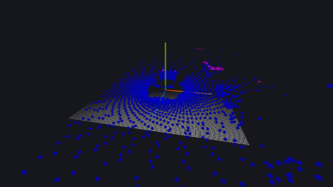
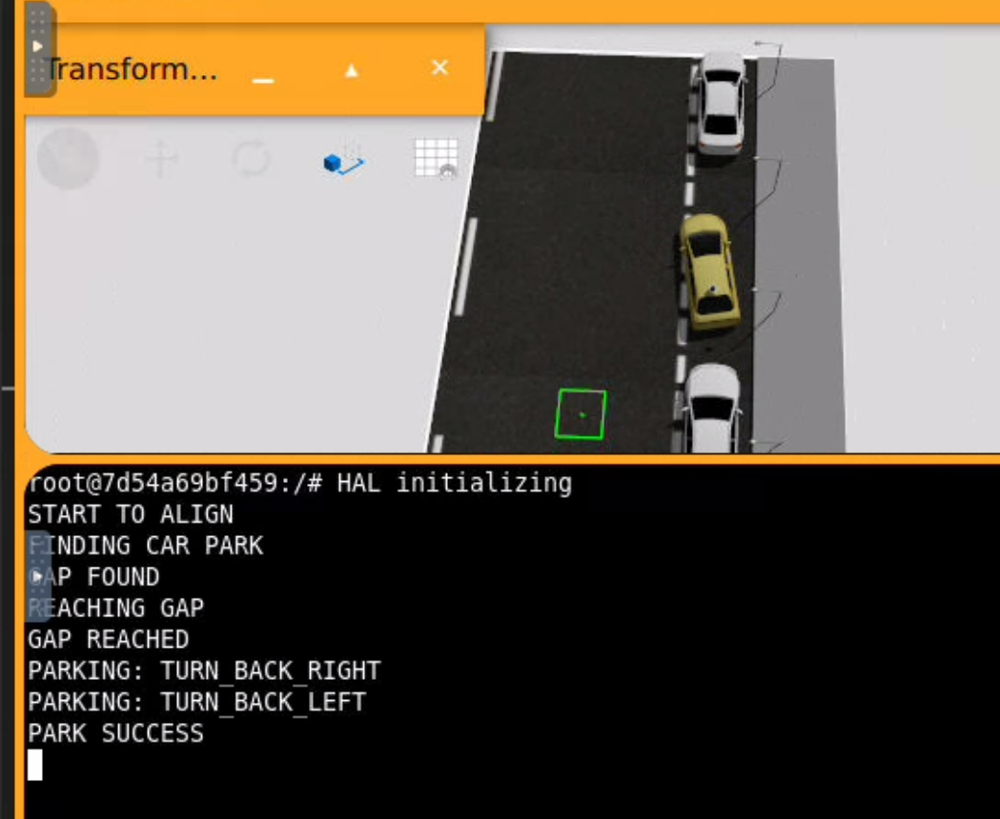

Introduction
The objective of this thrid practical assignment is to develop an autonomous vehicle capable of parking itself in a street where other vehicles are already parked. The vehicle has Ackermann steering dynamics and is controlled using linear and angular velocities (V-W). It is also equipped with a GPS sensor (along with a compass for orientation) and, most importantly, a 360-degree LiDAR sensor, which provides distance measurements to obstacles surrounding the vehicle. The parking manoeuvre must primarily rely on LiDAR data, although three separate laser sensors (located at the front, rear and side of the vehicle) can alternatively be used during the initial testing stages to develop and validate the movement decisions.
The parking space detection algorithm must be safe and robust, even in situations where thin trees, walls or other obstacles are located alongside the street. Furthermore, the algorithm must work regardless of the absolute orientation of the street. Therefore, relying on absolute GPS coordinates is not appropriate, although incremental position measurements can be used independently of the vehicle's orientation. The vehicle must be able to park successfully in different scenarios: in a space between two parked cars, when there is only a front reference vehicle, or when there is only a rear reference vehicle.
01. Theorical Concepts
This system combines a 360-degree LiDAR sensor with a GPS sensor, to pak. To create the algorithm solution we needed the next theorical concepts:
3D LiDAR Attributes A 3D LiDAR (Light Detection and Ranging) sensor is a device that measures distances to surrounding objects by emitting laser beams and analysing the reflected signals. By collecting multiple measurements in different directions, it generates a three-dimensional representation of the environment, commonly known as a point cloud. In this project, the LiDAR sensor provides information about the obstacles surrounding the vehicle. This information is essential for identifying parked cars, detecting available parking spaces, estimating the orientation of the street and ensuring a safe parking manoeuvre. The HAL.getLidarData() function returns an object containing several attributes that describe the point cloud and the characteristics of the sensor.
Points
The points attribute contains a list of three-dimensional coordinates (x, y, z), expressed in metres. Each point represents a location where the LiDAR sensor has detected an obstacle or a surface. - X coordinate: Represents the position of the detected point along the sensor's X axis. - Y coordinate: Represents the position along the Y axis. - Z coordinate: Represents the vertical position of the point. By combining these coordinates, the sensor generates a point cloud that describes the geometry of the surrounding environment. In autonomous parking, these points can be processed to identify nearby vehicles, walls and o ther obstacles. By filtering the point cloud according to specific coordinates or height ranges, it is possible to isolate relevant areas of the environment. For example, points located on the right side of the vehicle can be used to estimate the direction of the street and detect potential parking spaces.
Intensities
The intensities attribute contains the intensity values associated with the laser returns. These values indicate the strength of the reflected laser signal received by the sensor. The intensity depends on several factors, including: - The material and reflectivity of the detected surface. - The distance between the sensor and the object. - The angle at which the laser beam hits the surface. - The characteristics of the laser sensor. Intensity measurements can help distinguish between different types of surfaces and improve object detection in certain situations. However, this attribute may be an empty list if the point cloud does not provide intensity information. Therefore, the parking algorithm should not depend exclusively on these values.
TimeStamp
The timeStamp attribute represents the time, in seconds, at which the point cloud was captured. Each LiDAR measurement corresponds to a specific moment in time. This timestamp makes it possible to associate sensor measurements with the vehicle's position and orientation at the corresponding moment. Timestamps are particularly useful when combining information from different sensors, such as LiDAR and GPS, or when analysing changes in the environment over time. In autonomous parking, this information can be used to understand the temporal evolution of the detected obstacles and maintain consistency between consecutive measurements.
Min_range
The min_range attribute specifies the minimum distance, in metres, at which the LiDAR sensor can reliably detect objects. Objects located closer than this distance may not generate valid measurements. This limitation is related to the sensor's operating characteristics. This parameter is important when designing obstacle detection algorithms because objects within the minimum detection range may not be represented correctly in the point cloud. In the parking manoeuvre, understanding this limitation helps establish appropriate safety margins and avoid relying on measurements outside the sensor's operating range.
Max_range
The max_range attribute specifies the maximum distance, in metres, at which the LiDAR sensor can detect objects. Objects located beyond this range cannot be reliably detected by the sensor. This parameter defines the effective detection area of the LiDAR and determines how far the vehicle can observe its surroundings. In autonomous parking, the maximum range is particularly relevant during the parking-space search phase. It determines the distance at which parked vehicles and potential gaps can be detected. Filtering measurements according to the sensor's detection range also helps eliminate invalid or irrelevant points.
Field_of_view
The field_of_view attribute describes the angular coverage of the LiDAR sensor, including its horizontal and vertical fields of view. These values are expressed in radians. - Horizontal Field of View: Defines the angular range covered around the horizontal plane. A 360-degree horizontal field of view allows the sensor to observe the entire area surrounding the vehicle. - Vertical Field of View: Defines the angular range covered in the vertical direction, allowing the sensor to detect points at different heights. The field of view determines which areas of the environment can be observed by the sensor. For autonomous parking, a wide horizontal field of view is particularly useful because the vehicle needs to detect obstacles located in front, behind and on both sides. The vertical field of view also provides useful information about the height and geometry of detected objects, although the algorithm may filter points according to their Z coordinate to focus on a specific horizontal region.
Is_dense
The is_dense attribute indicates whether all points in the point cloud contain valid, finite coordinates. - True: All points are expected to contain valid coordinates. - False: The point cloud may contain invalid measurements, such as NaN (Not a Number) or infinite values. This attribute is important when processing LiDAR data because invalid measurements can cause errors in mathematical operations, distance calculations and geometric algorithms. For this reason, it is good practice to validate the coordinates of each point before using them. In this project, checking that the X, Y and Z coordinates are finite ensures that subsequent operations, such as sorting points, calculating distances or fitting a line through linear regression, can be performed safely.
03. My Algorithm
My algorithm uses LiDAR measurements to detect surrounding obstacles and estimate the street orientation. It also uses the vehicle's position and yaw information to calculate distances and monitor its orientation. The vehicle is controlled through two parameters: - Linear velocity (V): Controls forward and backward movement. - Angular velocity (W): Controls the vehicle's rotation. The algorithm is implemented as a finite-state machine with four main states: ALIGN, FIND_CAR_PARK, PARK and DONE. Each state represents a different stage of the parking process.
The get_lidar_points() function filters the raw LiDAR point cloud according to the height and direction of the measurements. First, it checks that the X, Y and Z coordinates contain finite values, discarding invalid measurements. Then, it applies a height filter to focus on a specific horizontal region of the environment. Finally, the points are classified according to their position: FRONT: Positive X coordinates. - RIGHT: Positive Y coordinates. - BACK: Negative X coordinates. This filtering reduces the amount of data and allows the algorithm to focus on the obstacles relevant to each stage.

The first stage consists of aligning the vehicle parallel to the street using the LiDAR points detected on its right side. The align_car() function uses linear regression (np.polyfit()) to calculate the line that best fits the detected points:[y = mx+b] The slope is used to estimate the orientation angle through the arctangent function. If the angle is smaller than 3 degrees, the vehicle is considered aligned. However, this condition must be satisfied for 10 consecutive iterations to avoid accepting incorrect measurements. Otherwise, the algorithm applies a proportional angular correction based on the detected angle, limiting the angular velocity between -0.85 and 0.85. Once alignment is achieved, the vehicle stops and transitions to the parking-space search stage.
The find_parking_gap() function searches for an empty parking space using the LiDAR points detected on the right side. First, it selects points within a predefined X-coordinate range (0 to 6 metres) and requires at least 10 measurements. The points are then sorted according to their X coordinates. The algorithm calculates the differences between consecutive points using np.diff() and identifies the largest separation. If this distance exceeds 1.8 metres, it is considered a potential parking space. When a gap is detected, the vehicle's current position is stored, and the algorithm calculates the target distance using the end coordinate of the detected gap plus an additional 7.5 metres. The vehicle then continues moving forward until it reaches this target distance. The displacement is calculated using the Euclidean distance between its current and initial positions: [d=sqrt{(x-x_0)^2+(y-y_0)^2}]. This approach uses incremental position measurements rather than absolute GPS coordinates, making the algorithm independent of the street's absolute orientation. When the target position is reached, the vehicle stops and stores its current yaw as a reference for the parking manoeuvre.
The parking manoeuvre is divided into two consecutive phases, both performed in reverse. Before executing the manoeuvre, the algorithm processes the LiDAR points behind the vehicle. The back_distance() function filters these measurements and calculates the minimum Euclidean distance to the detected obstacles. The vehicle's angular displacement is also calculated relative to the initial yaw.This normalisation ensures that the angular difference remains within the interval ([-\pi,\pi]). The algorithm also stores the maximum angular displacement reached during the manoeuvre. Phase 1: TURN_BACK_RIGHT The vehicle reverses while turning right, using a linear velocity of -0.4 and an angular velocity of 0.6. When the angular displacement reaches half of the predefined 35-degree turning angle, the algorithm switches to the second phase. Phase 2: TURN_BACK_LEFT The vehicle continues reversing but changes its turning direction, reducing its linear velocity to -0.3 and setting its angular velocity to -0.6.During this phase, two conditions are evaluated: Rear obstacle distance: The vehicle must stop if the distance to the nearest detected rear obstacle is 0.5 metres or less. Parallel orientation: The vehicle must return to an angular displacement smaller than 1 degree, provided that it previously reached a displacement greater than 15 degrees. When either condition is satisfied, the vehicle stops and transitions to the DONE state to stop.

04. Dificulties or Problems Encountered During Development
In this section, I will explain the problems I encountered during the development of this practice, as well as some issues that I was not able to completely solve.
- One of the main challenges was understanding how the 3D LiDAR sensor works and, more specifically, how to correctly interpret and process the point cloud data. At first, it was difficult to understand the coordinate system, identify which points corresponded to obstacles in different directions and determine how to use this information to detect parking spaces and estimate the vehicle's orientation. I had to spend some time experimenting with the sensor data, filtering the points and testing different approaches until I understood how to extract the information required by the algorithm.
- Another significant problem was related to my computer's performance. My laptop struggled to handle the simultaneous execution of the algorithm and the visualization of the LiDAR point cloud. Displaying all the detected points through the WebGUI caused performance issues and interfered with the algorithm's execution. This made debugging and testing considerably more difficult, as I could not easily observe the sensor data while checking the vehicle's behaviour. To overcome this limitation, I decided to record the algorithm's execution and the LiDAR visualization separately, allowing me to demonstrate both aspects without affecting the program's performance as much.
- Finally, time constraints were another important difficulty. Understanding the LiDAR data, developing the different stages of the parking algorithm, testing the vehicle's movements and correcting unexpected behaviours required more time than initially expected. As a result, I had limited time to thoroughly test all possible parking scenarios and fine-tune the algorithm's parameters.
05. Video of the algorithm
There are two videos attached. The first one shows the parking algorithm in operation, including the different stages of the autonomous parking manoeuvre. The second video focuses on the LiDAR data visualization. It shows two different representations: first, all the points detected by the LiDAR sensor, and then only the points located on the right side of the vehicle, which are the ones used by the algorithm to detect the parking spaces and align the car. I decided to record these videos separately because the algorithm does not work properly when the LiDAR points are displayed simultaneously through the WebGUI. Showing the LiDAR data seems to interfere with the algorithm's execution, so I recorded the algorithm and the LiDAR visualization separately to demonstrate both functionalities clearly.
▶ Watch the algorithm video ▶ Watch the lidar video